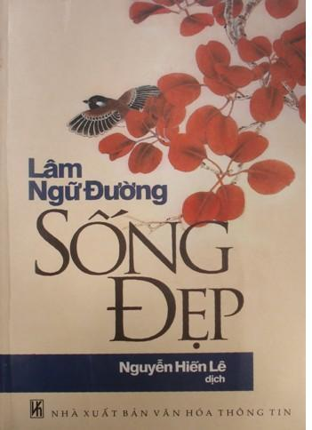

Đạo bất viễn nhân, nhân chi vi đạo
nhi viễn nhân, bất khả dĩ vi đạo.
KHỔNG TỬ
MỤC LỤC
1. QUAN NIỆM CỦA HI LẠP VÀ TRUNG HOA
2. KHÔNG THOÁT LI ĐƯỢC CÕI TRẦN
4. MỘT QUAN NIỆM CỦA KHOA SINH VẬT HỌC
5. CÓ NHỮNG BẮP THỊT CƯỜNG TRÁNG
1. SỰ TÔN NGHIÊM CỦA CON NGƯỜI
2. DO TÁNH TÒ MÒ KHÔNG VỊ LỢI MỚI CÓ VĂN MINH.
5. TINH THẦN PHÓNG KHOÁNG VÀ ĐỘC LẬP
1. TA HÃY TỰ TÌM LẤY TA: TRANG TỬ
3. NGẠO ĐỜI, TỰA NHƯ NGU ĐỘN VÀ ẨN DẬT: LÃO TỬ
4. TRIẾT HỌC TRUNG DUNG: TỬ TƯ
5. MỘT NGƯỜI YÊU ĐỜI: ĐÀO UYÊN MINH
2. HẠNH PHÚC CỦA TA THUỘC VỀ CẢM GIÁC
3. BA MƯƠI BA LÚC VUI CỦA KIM THÁNH THÁN
4. NGƯỜI TA HIỂU LẦM CHỦ NGHĨA DUY VẬT
4. NHỮNG THÚ VUI TINH THẦN LÀ GÌ?
1. TRONG CÁC LOÀI ĐỘNG VẬT CHỈ DUY CÓ CON NGƯỜI LÀ LÀM VIỆC
2. THUYẾT NHÀN TẢN CỦA TRUNG HOA
4. CÕI TRẦN LÀ THIÊN ĐƯỜNG DUY NHẤT
2. CHỦ NGHĨA ĐỘC THÂN: SẢN PHẨM LỐ LĂNG CỦA VĂN MINH
3. VẺ GỢI TÌNH CỦA PHỤ NỮ PHƯƠNG TÂY
4. LÍ TƯỞNG VỀ GIA ĐÌNH CỦA TRUNG HOA
1. NGHỆ THUẬT NẰM NGHỈ Ở GIƯỜNG
5. UỐNG RƯỢU VÀ NHỮNG TRÒ CHƠI TRONG TIỆC RƯỢU
8. VÀI TỤC KÌ DỊ CỦA PHƯƠNG TÂY
9. TÂY TRANG KHÔNG HỢP NHÂN TÌNH
6. THUẬT CẮM HOA VÔ BÌNH CỦA VIÊN TRUNG LANG
7. VÀI CÂU CÁCH NGÔN CỦA TRƯƠNG TRÀO
2. NGHỆ THUẬT LÀ MỘT DU HÍ PHÁT BIỂU CÁ TÍNH CỦA TA
2. TẠI SAO TÔI LÀ MỘT DỊ GIÁO ĐỒ
1. CẦN CÓ NHỮNG TƯ TƯỞNG CẬN NHÂN TÌNH
DANH NHÂN và DANH TÁC TRUNG HOA
1. Bài Dong Am của Bạch Ngọc Thiềm
3. Bài từ khúc của Quản phu nhân
4. Bài Phóng thuyền của Đỗ Phủ
°
° °
Trong Hồi kí (Nxb Văn học – 1993), cụ Nguyễn Hiến Lê nói về cuốn Một quan niệm về Sống Đẹp như sau:
“Lâm Ngữ Đường viết cuốn Sống đẹp bằng tiếng Anh, nhan đề là The Importance of living từ 1937. Khoảng 1957 tôi được đọc bản dịch ra tiếng Pháp L’Importance de vivre của nhà Corrêa, thấy tác phẩm rất hay mà bản dịch kém. Mấy năm sau tôi thấy ở nhà xuất bản Á Châu một bản Việt dịch hình như của Vũ Bằng[1] cũng tầm thường mà lại cắt bỏ nhiều quá, chỉ còn độ một phần ba, như vậy ý nghĩa của tác phẩm không còn gì cả. Từ đó tôi có ý dịch lại, muốn vậy phải có nguyên bản tiếng Anh và phải tra được những nhân danh, địa danh bằng chữ Hán.
Năm 1964 tôi viết thư hỏi thẳng tác giả ở Mĩ. Ông hồi âm liền từ Thuỵ Sĩ, nơi ông đang du lịch, vui vẻ cho phép tôi dịch, và cho biết nguyên bản tiếng Anh không còn, nhưng có bản Hoa dịch nhan đề là Sinh hoạt đích nghệ thuật. May sao ông Giản Chi có bản này (do Việt Duệ dịch – nhà Thế giới Văn hoá xuất bản – 1940) và cho tôi mượn. Bản đó đầy đủ, chép hết những cổ văn, cổ thi Trung Hoa mà Lâm Ngữ Đường dẫn trong tác phẩm và nhiều khi chép thêm bản dịch những bài đó của Lâm nữa. Thế là tôi có được hai bản của Hoa và Pháp. Tôi so sánh rồi khởi công dịch liền, cuối năm 1964 xong. Trong khi dịch, luôn ba hay bốn tháng, tôi thấy vui gần như hồi trước dịch cuốn Quẳng gánh lo đi, vì nhân sinh quan nhà tản của Lâm – mà chính là của Trung Hoa – vì tinh thần nghệ sĩ và hài hước của ông, vì giọng tự nhiên, thân mật, đôi khi như cười cợt, đùa bỡn nữa, không khác một cuộc đàm thoại chung quanh một bình rượu hay một ấm trà giữa những người bạn đồng điệu.
Nhờ có những văn thơ bằng chữ Hán, khỏi phải dịch theo bản tiếng Anh hay Pháp, nên tôi biết chắc rằng bản dịch của tôi sẽ được hoan nghênh, độc giả sẽ thích hơn là đọc nguyên tác của Lâm. Cuốn Sống đẹp bán chạy. Nhà Tao Đàn in hai ba lần mỗi lần ít nhất 3.000 bản, lần đầu vào tháng 3 năm 1965.
Nhiều độc giả khen là dịch khéo, trong số đó có Đông Hồ. Một độc giả tôi chưa hề quen, bác sĩ Trần Văn Bảng (học trường Bưởi trước tôi vài năm) thích quá, làm một bài thơ nhan đề là Sống đẹp gởi tặng tôi. Bài gồm 5 đoạn, tôi chép lại đây đoạn giữa:
---
Đây tư tưởng chín tầng mây siêu việt
Sang sảng nghe tiếng nói của thánh hiền
Ngọc chuốt, châu gieo, lời vàng, ý thép
Khiến tâm linh hoan lạc cõi vô biên
---
Từ đó chúng tôi thành bạn thân”. (Hồi kí, trang 466-467).
Ngô Văn Long, trong bài giới thiệu cuốn Sống đẹp đăng trên trang http://www.sachhay.com/book/20080328519/song-dep.aspx, viết như sau:
“Đọc quyển này rồi thì có thể sau đó các bạn sẽ nghĩ khác đi, thậm chí sẽ sống hơi khác đi một chút.
Lâm Ngữ Đường là học giả Trung Hoa từng học ở Harvard, Leipzig, sống cùng thời với những tên tuổi như Hồ Thích, Lỗ Tấn, sau qua sống ở Mỹ, viết nhiều sách bằng tiếng Anh giới thiệu Trung Hoa với phương tây.
Một trong mấy cuốn đó rất nổi tiếng là The Importance of Living, bàn về cách sống, triết lý sống, tác giả thường so sánh hai nếp sống Mỹ và Trung quốc, tôi nghĩ các bạn, đặc biệt các bạn sống ở nước ngoài, có dịp nên đọc thử (…).
Nguyễn Hiến Lê dịch cuốn này năm 1964, còn Lâm tiên sinh thì viết từ 1937, ở
Về các nhân danh, địa danh, có lẽ ông Ngô Văn Long muốn nói rằng trong Sống đẹp không có những tên bị “Tây hoá” như ngày nay ta vẫn thỉnh thoảng thấy trên báo chí tiếng Việt vì tôi tin rằng ông Long cũng biết rõ cụ Nguyễn Hiến Lê đâu có chịu giữ nguyên các tên Confucius, Laot’su, Peking, Beijing trong nguyên tác mà không chuyển ra “từ ngữ Hán Việt quen thuộc”. Hơn nữa, nếu như trong Đắc nhâm tâm, cụ Nguyễn Hiến Lê cho bà Druckenbroad và ông Webb như người Việt, một người nuôi gà tàu, một người nuôi gà ta[2]; thì trong Sống đẹp, cụ cho ta cái cảm tưởng rằng Lâm Ngữ Đường là người Việt, trong nhà cũng thích mặc bộ đồ “bà ba”[3] như cụ vậy. Tôi cho rằng lời cụ tự nhận định về hai cuốn Đắc nhâm tâm và Quảng gánh lo đi cũng đúng với cuốn Sống đẹp này: “Chủ trương của tôi là dịch loại sách “Học làm người” như hai cuốn đó thì chỉ nên dịch thoát, có thể cắt bớt, tóm tắt, sửa đổi một chút cho thích hợp với người mình miễn là không phản ý tác giả; nhờ vậy mà bản dịch của chúng tôi rất lưu loát, không có “dấu vết dịch”, độc giả rất thích” (Hồi kí, trang 303). Tuy nhiên, vì cuốn Sống đẹp được cụ dịch từ năm 1964, và vì dịch theo cách hiểu của Lâm Ngữ Đường nên có vài chỗ ta thấy lời của Khổng Tử, Lão Tử, Trang Tử hoặc những truyện liên quan đến các triết gia đó không giống hẳn với những lời và những truyện mà của cụ Nguyễn Hiến Lê chép trong các cuốn Khổng Tử, Lão Tử, Trang Tử.
Ngô Văn Long còn cho biết:
“Tôi rất… ghiền quyển Sống đẹp của Lâm, sau 75 một lần ra chợ sách cũ, lúc đó còn dễ dãi, cho bán búa xua, tình cờ thấy quyển The Importance of Living, bản tiếng Anh đàng hoàng (ngay Nguyễn Hiến Lê cũng không có) bày dưới hè đường, cầm lên đặt xuống, thèm… chảy nước miếng mà không có tiền mua (lúc đó còn đem sách nhà đi bán lấy tiền xài, tiền đâu mà mua vô)”.
Ngày nay, chắc Ngô Văn Long và nhiều bạn đã mua được cuốn The Importance of Living, còn nếu bạn nào chưa “sách giấy” thì có thể vào trang sau đây để đọc trực tuyến hoặc tải ebook về đọc: http://www.archive.org/details/linyutangtheimpo008763mbp.
Nhờ có bản PDF cuốn The Importance of Living mà trong khi gõ cũng như khi đọc lại các phần do hai bạn Luvasi và Lilypham gõ[4], khi gặp những chỗ ngờ sai, tôi tìm chỗ tương ứng trong bản tiếng Anh đó để chỉnh sửa và nếu thấy cần thì thêm chú thích. Tôi cũng dùng bản chữ Hán Sinh hoạt đích nghệ thuật (生活的藝術) đăng trên website Sina (http://vip.book.sina.com.cn/book/index_40185.html) để đối chiếu những chỗ ngờ sai[5].
Trong ebook này, tôi cũng tham khảo thêm vài trang web chữ Hán khác để chép thêm vào Phụ lục 2 vài bài thơ chữ Hán mà Lâm Ngữ Đường hoặc đã dịch cả bài sang tiếng Anh hoặc có bài chỉ dịch hai câu.
Xin chân thành cảm ơn bạn Luvasi và đặc biệt là bạn Lilypham vì bạn giúp tôi rất nhiều trong việc chép và phiên âm chữ Hán. Tôi cũng xin cảm ơn các vị trích đăng khá nhiều đoạn cuốn Sống đẹp này trên nhiều trang web khác nhau, nhờ các vị mà tôi đỡ tốn công gõ rất nhiều.
Goldfish
Tháng 03 năm 2010
Chú thích:
[1] Trong “Đời viết văn của tôi” chép là: của Trình Xuyên với tên sách Lạc thú ở đời. (Goldfish).
[2] Xem Đắc nhân tâm, chương 6: Xả hơi. (Goldfish).
[3] Bộ pyjama được cụ Nguyễn Hiến Lê dịch thoát thành: bộ bà ba. Bản chữ Hán dịch là thuỵ y (睡衣). Goldfish).
[4] Luvasi gõ từ đầu sách đến hết chương II, Lilypham gõ chương III và từ chương XI đến cuối sách. Phần tôi chỉ gõ từ chương IV đến hết chương X. (Goldfish)
[5] Rất tiếc là bản này không chép chương IX và chương X. (Goldfish).